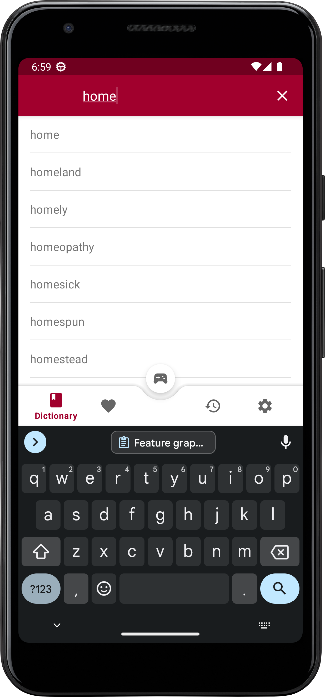
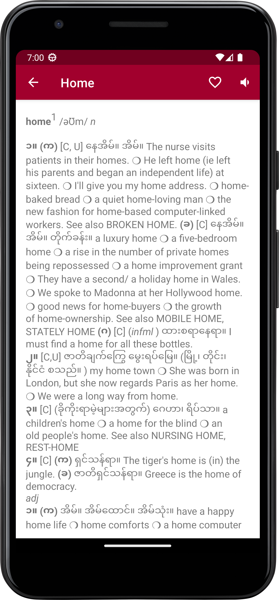
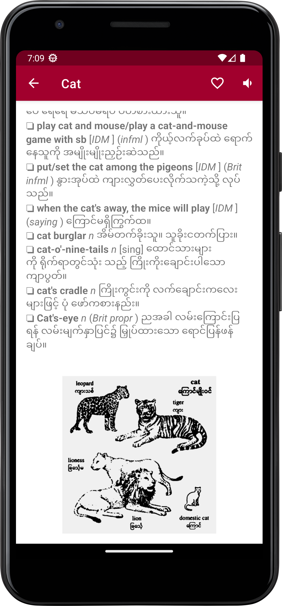

Android Application




Straw Hat Dictionary - the ultimate English to Myanmar offline dictionary app! Whether you're a student, traveler, or just looking to improve your language skills, Straw Hat Dictionary has everything you need to take your vocabulary to the next level. With our easy-to-use interface, you can quickly and easily look up English words and get instant translations in Myanmar language. You'll also have access to synonyms, image results, and other useful information to help you understand the meaning of the word. Our app includes powerful features like bookmarking and recent history, so you can easily save and revisit words you've looked up in the past. Plus, our word search puzzles are a fun way to test your language skills and expand your vocabulary. But perhaps the best feature of Straw Hat Dictionary is that it works offline, so you can use it anytime, anywhere - even if you don't have an internet connection. Say goodbye to the frustration of slow or unreliable online dictionaries, and enjoy fast, accurate translations right at your fingertips. So why wait? Download Straw Hat Dictionary today and start improving your English and Myanmar language skills like never before!
Welcome to Income Expenses Tracker - the ultimate app for tracking your finances on-the-go! With our easy-to-use interface, you can quickly and easily record your income and expenses, view your financial status, and stay on top of your money management. Whether you're a business owner, freelancer, or just looking to get a better handle on your personal finances, Income Expenses Tracker has everything you need to stay organized and in control. With features like customizable categories, automatic expense tracking, and real-time updates, you'll always know where your money is going and how much you have left. Our app also includes powerful reporting tools that allow you to analyze your spending habits and identify areas where you can cut back and save money. So why wait? Download Income Expenses Tracker today and start taking control of your finances like never before!